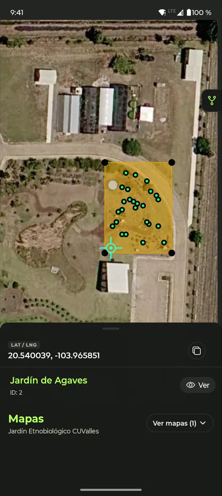
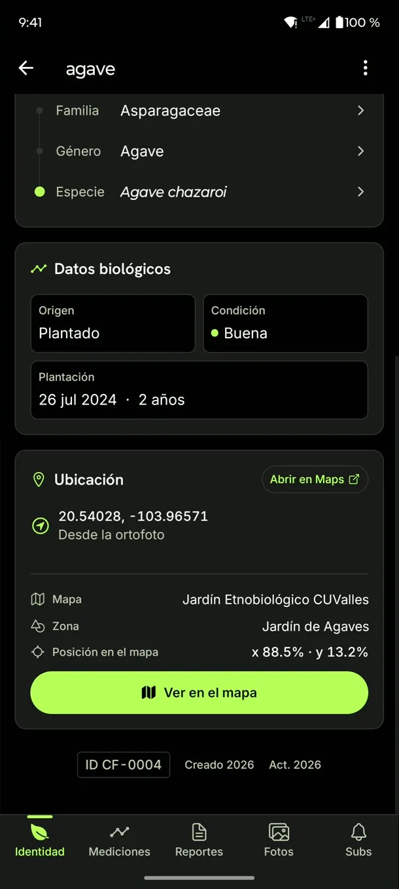
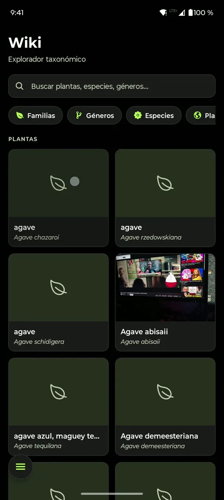
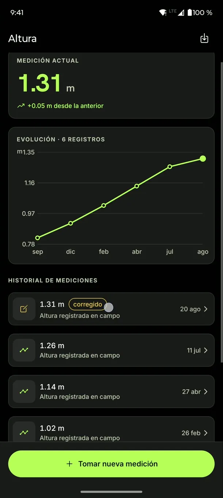
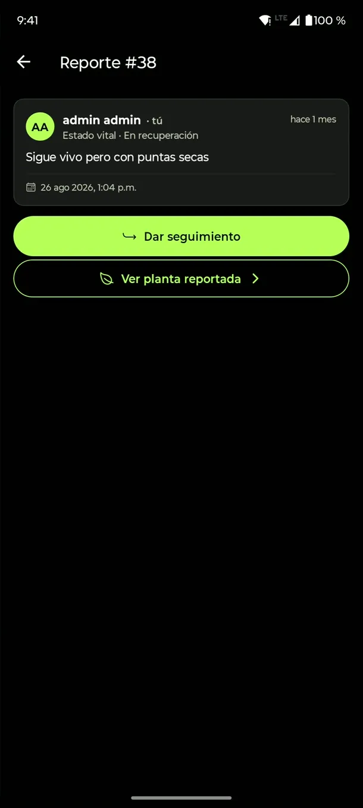
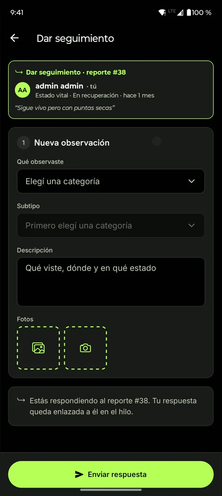
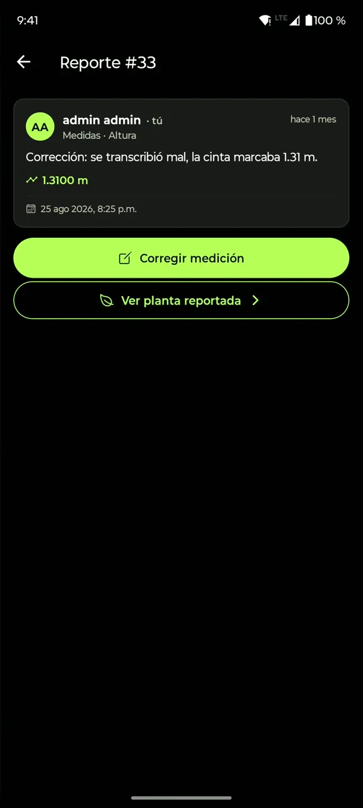
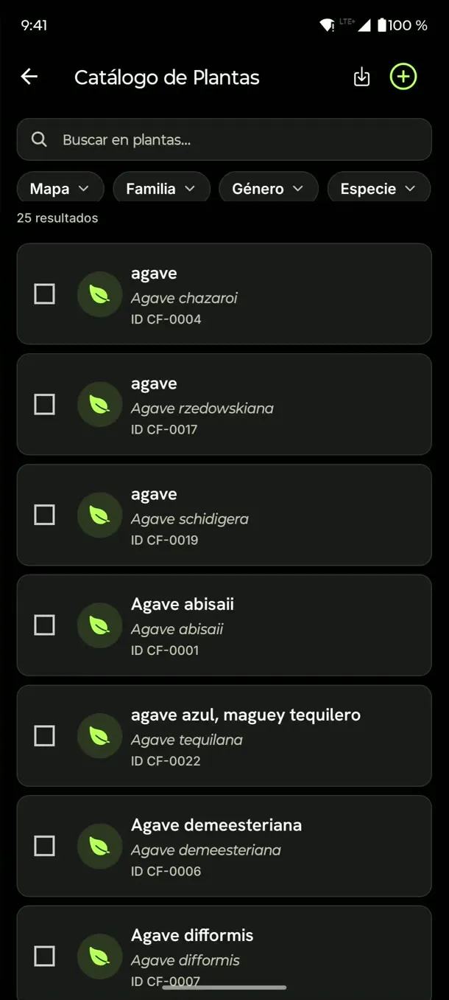

CuFlora
CuFloraColecciones vivas, ubicadas y con historial
CuFlora gestiona plantas y árboles de jardines etnobiológicos: catálogo taxonómico, mapas sobre ortofotos de dron y reportes de campo que dan trazabilidad geográfica y temporal a cada ejemplar.
8 categorías de reporte40+ subtiposgeorreferenciación de bajo costosin SIG comercial

Trazabilidad para una colección viva
Un jardín etnobiológico no es un catálogo estático: sus ejemplares crecen, enferman y cambian. CuFlora articula los tres planos que exige seguirles el rastro. Caso de estudio: el Jardín Etnobiológico de Jalisco, CUValles (UdeG).
- Identidad taxonómica
- La taxonomía se organiza como jerarquía —familia, género, especie— y de cada especie dependen los ejemplares concretos, con nombre científico, común, descripción e imágenes.
- Posición geográfica
- Cada ejemplar se ubica dentro de una zona, y las zonas dentro de un mapa de flora, con georreferenciación de bajo costo independiente de servicios cartográficos comerciales.
- Evolución temporal
- Los reportes de campo —encadenados entre sí— registran el historial de cada ejemplar en el tiempo: mediciones fechadas, intervenciones y aparición de plagas.
De la observación a la notificación
-
Se levanta el reporte
En campo: categoría, fotos, mediciones fechadas y la lectura GPS del momento, todo desde el teléfono.
-
Se georreferencia
Una transformación afín calibrada sobre las esquinas de la ortofoto del jardín convierte la posición del ejemplar en la imagen en latitud y longitud reales; las lecturas GPS de campo la contrastan.
-
Se notifica a los suscriptores
Quienes siguen esa planta, su zona o su mapa completo reciben una notificación con la novedad, y el reporte se suma a la línea de tiempo del ejemplar.
Todo el ciclo de la colección viva
Del catálogo a la exportación de datos, estas capacidades cubren el ciclo completo. Abre cada una para el detalle.
CatálogoCatálogo taxonómico
Jerarquía navegable de familia, género, especie y ejemplar, con fichas e imágenes en cada nivel. Distingue la especie del ejemplar, de modo que una corrección taxonómica se propaga sin rehacer registros.
MapasMapas de flora
Mapas propios sobre ortofotos de dron georreferenciadas en QGIS, con zonas poligonales anidadas y puntos. Las zonas pueden tener su propia ortofoto de más detalle y se editan desde la app: dibujar, mover vértices, anidar submapas y colocar cada ejemplar.
ReportesReportes de campo
Observaciones con fotos y mediciones fechadas, organizadas en un árbol de 8 categorías y más de 40 subtipos, encadenadas en una línea de tiempo por ejemplar. Las respuestas forman hilos: responder a una medición es una corrección (sin borrar el original) y responder a lo demás es un seguimiento. Registro diferenciado para plantas herbáceas/arbustivas y árboles (con medición de DAP).
GeorrefGeorreferenciación de bajo costo
Sin ArcGIS ni Google Maps: la ubicación se resuelve con un modelo matemático propio que corre en el backend. A partir de coordenadas normalizadas [0,1] sobre una imagen aérea del jardín y unos puntos de control (lat/lng):
- Proyección Web Mercator. Los puntos de control pasan a métrico (R = 6 378 137 m).
- Ajuste afín por mínimos cuadrados. Ecuaciones normales resueltas con la regla de Cramer.
- Transformación afín. Lleva cualquier coordenada normalizada de la imagen a Web Mercator.
- Inversa de Mercator. Devuelve la posición a latitud y longitud reales.
- Contraste GPS (opcional). El píxel manda: las lecturas GPS de los reportes abiertos desde el QR del ejemplar se acumulan por media ponderada por precisión (1/σ²) y se contrastan con la posición de la ortofoto; las que se alejan más de 30 m (Haversine) se descartan.
MedicionesEvolución de cada ejemplar
Altura y demás medidas se grafican en el tiempo, con el historial completo y las correcciones marcadas, para ver cómo crece cada ejemplar entre visitas.
DatosExportación a CSV
Plantas, reportes y catálogos se exportan a CSV con los mismos filtros de la app —fecha, mapa, taxón— para analizarlos en una hoja de cálculo o en R.
AccesoRoles, permisos y bitácora
Control de acceso orientado a permisos con roles de administración, investigación y consulta. Los cambios y los accesos quedan en bitácora, las sesiones se pueden revocar y los respaldos de la base son automáticos.
AvisosSuscripciones y notificaciones
Sigue un ejemplar, una zona o un mapa completo y recibe notificaciones push, encoladas para entrega asíncrona y tolerante a fallos.
AppCliente ligero, backend-first
La app móvil solo captura la observación —texto, foto y lectura GPS— y la remite al gateway: la lógica, la validación y el procesamiento viven en el backend, lo que mantiene el cliente simple y reemplazable.
Así se ve en el teléfono
Capturas de la app en el Jardín de Agaves del Jardín Etnobiológico de CUValles.
Desliza para ver más →







Instala CuFlora en tu Android
La app se distribuye como APK, fuera de Play Store. Instalarla toma un par de minutos.
CuFlora para Android
Descargar APK- Versión
- 1.1.0 · 13 oct 2026
- Tamaño
- 53 MB
- Requiere
- Android 7.0 o superior, procesador de 64 bits (ARM)
- SHA-256
7c643753f7ca19807743085db5dbc20d6c96ca88618bd9cdf0698cb1257b9faf
Notas y versiones anteriores en GitHub Releases.
Descarga el APK desde el teléfono
Abre esta página en el navegador de tu Android y toca “Descargar APK”. Si avisa que el archivo puede ser dañino, elige “Descargar de todos modos”: lo dice de cualquier app que no viene de Play Store.
Permite instalar apps desconocidas
Al abrir el archivo, Android pedirá permiso para que tu navegador (o tu app de archivos) instale apps. Activa “Permitir de esta fuente” y regresa.
Instala y abre CuFlora
Toca “Instalar”. Si Play Protect pregunta, elige “Instalar de todos modos”. Ya instalada, puedes quitarle ese permiso al navegador.
Inicia sesión
Entra con la cuenta que te asignaron y acepta los permisos de cámara y ubicación cuando la app los pida.
¿Necesitas una cuenta?
Por ahora el acceso es por invitación. Escribe a claudio.rodriguez4333@alumnos.udg.mx con tu nombre y para qué la usarás, y te mandamos tus datos de acceso.
Preguntas frecuentes
Sobre la instalación, las actualizaciones y el acceso.
¿Hay versión para iPhone?
No por ahora. La app se distribuye solo para Android 7.0 o superior con procesador de 64 bits, que son casi todos los teléfonos de los últimos años.
¿Por qué no está en Play Store?
CuFlora es un proyecto académico en desarrollo y por ahora la usa un grupo cerrado. Distribuir el APK directamente permite publicar cambios sin esperar la revisión de la tienda.
El archivo siempre se descarga desde GitHub. Para comprobar que no se alteró, compara su huella SHA-256 con la de esta página.
¿Cómo actualizo la app?
Descarga el APK nuevo desde esta página e instálalo encima. No hace falta desinstalar, y conservas tu sesión y las ortofotos guardadas.
Si tenías una versión de prueba anterior a la 1.1.0 y Android avisa de un conflicto con el paquete, desinstálala primero: esas versiones se firmaban con otra llave.
¿Qué permisos pide y para qué?
Cámara, para las fotos de los reportes, y ubicación, para la lectura GPS de la observación y para mostrarte en el mapa. Cada foto guarda quién la subió y a qué hora se tomó.
¿Funciona sin señal?
Las ortofotos se guardan en el teléfono después de verlas por primera vez, así que el mapa carga rápido en campo. Para enviar reportes sí se necesita conexión; si el servidor no responde, la app te avisa.
¿Cómo consigo una cuenta?
Por ahora el acceso es por invitación: las cuentas las da el equipo del proyecto para controlar quién edita el inventario. Pide la tuya en claudio.rodriguez4333@alumnos.udg.mx.
Arquitectura de microservicios
La app móvil —único cliente de referencia— habla por HTTPS con un API Gateway (BFF) que valida el token y enruta por TCP a microservicios aislados: usuarios, plantas y mapas, reportes, imágenes y notificaciones. El backend expone una API consumible por distintos clientes.
| Cliente móvil | Expo · React Native |
|---|---|
| Proxy inverso | NGINX (terminación TLS) |
| Gateway · Servicios | NestJS (REST en el gateway, TCP MessagePattern entre servicios) |
| Mapa | React Native Skia (ortofoto y capas) |
| Ortofotos | Dron · QGIS (complemento propio que publica la georreferencia) |
| ORM | TypeORM |
| Datos | MariaDB (relacional) · MongoDB (notificaciones) |
| Colas | BullMQ · Redis |
| Push | Expo Push API (sin Firebase) |
| Correo | Nodemailer · SMTP |
| Auth | JWT (Passport · bcrypt) · RBAC por permisos |
| Framework interno | kawi-aa-nestjs (CRUD, filtros y paginación) |
| Despliegue | Docker · Compose · Cloudflare |